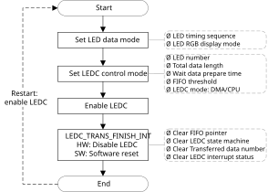

Supported ICs
IC |
RTL8721Dx |
RTL8726E |
RTL8720E |
RTL8730E |
|---|---|---|---|---|
Supported |
Y |
Y |
Y |
Y |
Introduction
LEDC is used to control external Intelligent LED lamps, like WS2812B. LEDC supports DMA mode and interrupt mode, with 32*24 bits LEDC FIFO. LEDC also supports RGB888 display mode and configurable refresh time.
LEDC Control Application
Taking WS2812C-2020 LED for example, before using this LED, we have to configure the logical character 0 and character 1 according to the LEDC data input code of typical LED datasheet, as shown below.
Modulate code |
Description |
Time range |
Unit |
|---|---|---|---|
T0H |
Digital 0 code, high-level time |
220 ~ 380 |
ns |
T0L |
Digital 0 code, low-level time |
580 ~ 1000 |
ns |
T1H |
Digital 1 code, high-level time |
580 ~ 1000 |
ns |
T1L |
Digital 1 code, low-level time |
220 ~ 420 |
ns |
RESET |
Frame unit, low-level time |
> 280 |
μs |
The logical 0 coding time is T0-code (800ns ~ 1980ns), and logical 1 coding time is T1-code (800ns ~ 2020ns).
The supported LED number is:
When LED’s refresh rate is 30 frames/s, the supported LED number is 681 to 1023.
When LED’s refresh rate is 60 frames/s, the supported LED number is 337 to 853.
The related registers of LED setting are LED_T0&T1_TIMING_CTRL_REG, LEDC_DATA_FINISH_CNT_REG, LED_RESET_TIMING_CTRL_REG, LEDC_WAIT_TIME_CTRL_REG, LEDC_DMA_CTRL_REG, and LEDC_INTERRUPT_CTRL_REG.
WS2812 serious LED data transfer protocol uses a single NRZ (non-return zero) communication mode. After the LED power-on reset, the DI port receives data from the controller, the first LED collects initial 24-bit data then sends 24-bit data to the internal data latch, the other data reshaping by the internal signal reshaping amplification circuit sent to the next cascade pixel through the DO port. After transmission of each pixel, the signal reduces 24 bits. Pixel adopts auto reshaping transmit technology, making the pixel cascade number is not limited by the signal transmission, only depending on the speed of signal transmission.
Operation Flow
The flow of LEDC normal configuration process is shown below.
Configure LEDC data mode through LED_RGB_MODE field, LED_MSB_TOP bit, LED_MSB_BYTE2 bit, LED_MSB_BYTE1 bit and LED_MSB_BYTE0 bit in LEDC_CTRL_REG register.
Configure LEDC control mode through LED_T01_TIMING_CTRL_REG register, LEDC_DATA_FINISH_CNT_REG register, LED_RESET_TIMING_CTRL_REG register, LEDC_WAIT_TIME0_CTRL_REG register, LEDC_WAIT_TIME1_CTRL_REG register, LEDC_DMA_CTRL_REG register and LEDC_INTERRUPT_CTRL_REG register.
Enable the LEDC by writing 1 to the LEDC_EN bit in LEDC_CTRL_REG register.
If LEDC_DMA_EN bit in LEDC_DMA_CTRL_REG register is set to 1, go to Step 5. If not, go to Step 7.
The LEDC sends dma_req to the DMAC.
TheDMAC transfers data from memory to LEDC FIFO by APB bus and sends dma_ack signal following the last data. Go to Step 8.
The LEDC sends CPU_REQ_INT signal to CPU. DMAC is required to transfer data from memory to the LEDC. Go to Step 8.
The LEDC transfers data from LEDC FIFO to LED lamps.
When LED_DATA_FINISH_CNT field in LEDC_DATA_FINISH_CNT_REG register equals TOTAL_DATA_LENGTH in LEDC_CTRL_REG register, LED_TRANS_FINISH_INT interrupt is generated, and hardware resets LEDC_EN to 0.
Clear LED_TRANS_FINISH_INT interrupt by the software.
It is suggested that asserting LEDC_SOFT_RESET bit in LEDC_CTRL_REG register to clear all interrupt status registers.
If the software wants to scan LED lamps again, go to Step 1.
{kind=link}

LEDC normal configuration process
Note
For more details, refer to mbed API document.